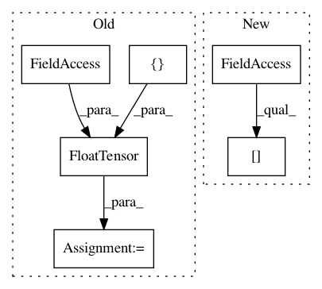

d68a10c35ed938f113070b483d1144b0433dde6a,examples/mnist_grid.py,,,#,12
Before Change
index = adj._indices()
weight = adj._values()[:, 1]
n = adj.size(0)
adj = torch.sparse.FloatTensor(index, weight, torch.Size([n, n]))
new_adjs.append(adj)
adjs = new_adjs
adjs = [stack([adj for _ in range(batch_size)])[0] for adj in adjs]
After Change
if torch.cuda.is_available():
adjs = [adj.cuda() for adj in adjs]
adj_0, adj_1, adj_2 = adjs[0], adjs[1], adjs[2]
class Net(nn.Module):
In pattern: SUPERPATTERN
Frequency: 3
Non-data size: 6
Instances
Project Name: rusty1s/pytorch_geometric
Commit Name: d68a10c35ed938f113070b483d1144b0433dde6a
Time: 2017-11-07
Author: matthias.fey@tu-dortmund.de
File Name: examples/mnist_grid.py
Class Name:
Method Name:
Project Name: rusty1s/pytorch_geometric
Commit Name: 85299abb1ccec56c914337d45f461d2f68e24c2b
Time: 2017-11-18
Author: matthias.fey@tu-dortmund.de
File Name: examples/cora.py
Class Name:
Method Name:
Project Name: rusty1s/pytorch_geometric
Commit Name: cce8409beb4c1b662de2b9635cd723993184be23
Time: 2017-11-10
Author: matthias.fey@tu-dortmund.de
File Name: torch_geometric/datasets/utils/faust_monet.py
Class Name:
Method Name: